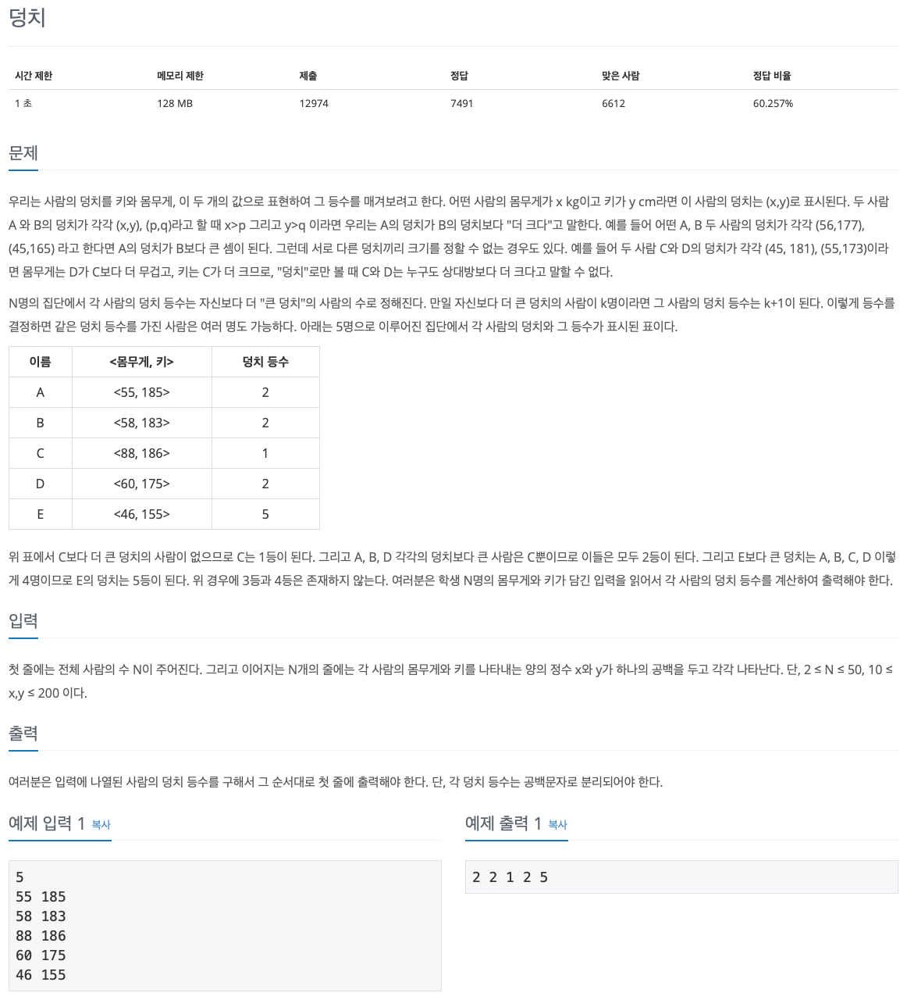

백준 문제 풀이: 7568 - 덩치

문제 파악
몸무게와 키가 모두 커지야지만 덩치가 더 큰 것이 된다.
같은 등수가 여러명인 경우, 그만큼 그 다음 등수는 밀린다는 점에 주의한다.
문제 풀이
문제에서 등수를 구하기 때문에 정렬을 생각해볼 수 있지만, 단순하게 정렬은 이 문제를 해결해 주지 못한다. 정렬의 기준을 잡기도 모호하고, 동일한 등수에 대한 처리가 필요하기 때문이다. 이 문제의 경우, 자원과 입력의 제한이 크지 않기 때문에 정말 단순한 방법인 브루트 포스(Brute Force) 알고리즘을 적용해 볼 수 있다.
브루트 포스는 경우의 수를 모두 순회하며 원하는 결과 값을 얻는 방법을 말한다. 단순하게 순회하는 것이기 때문에 알고리즘을 생각해내기 수월하지만, 자원이 한정되어 있는 경우 문제가 발생할 수 있다. 특히, 입력 범위가 넓은 경우, 시간 제한에 걸릴 수 있으니 다른 알고리즘을 생각해내야 한다.
이런 단점이 있기 때문에 자원 제한이 있는 경우, 다른 알고리즘을 생각해내기 위한 사전 수단으로 이용되기도 한다. 개념적으로는 단순히 경우의 수를 대입해 보면서 알아보는 것이기 때문이다. 그 과정에서 규칙이나 구조를 파악하며 다른 알고리즘을 생각해낼 수 있다.
이 문제에서는 한 명마다 모든 인원을 비교하면서, 덩치가 작은 경우 등수가 밀리도록 했다. 본인을 비교할 때 등수가 밀리지 않도록 주의한다. 이렇게 모든 경우의 수를 비교하면 자연스럽게 덩치에 따라 등수가 밀리므로, 동일한 덩치에 대해서는 같은 등수가 된다.
풀이 소스
문제 풀이 환경: Python 3.7
1
2
3
4
5
6
7
8
9
10
11
12
import sys
n = int(input())
xy = [tuple(map(int, l.split())) for l in sys.stdin.readlines()]
rankings = [1] * n
for i in range(len(xy)):
for x, y in xy:
if xy[i][0] < x and xy[i][1] < y:
rankings[i] += 1
print(' '.join(map(str, rankings)))